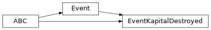
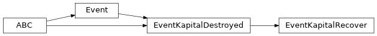

boario.event#
Classes#
Event: Undocumented.EventKapitalDestroyed: Undocumented.EventArbitraryProd: Undocumented.EventKapitalRecover: Undocumented.EventKapitalRebuild: Undocumented.
- class Event(*, impact, name='Unnamed', occurrence=1, duration=1)[source]#
Create an event shocking the model from a dictionary.
An Event object stores all information about a unique shock during simulation such as time of occurrence, duration, type of shock, amount of damages. Computation of recovery or initially requested rebuilding demand is also done in this class.
- Parameters:
event (dict) – A dictionary holding the necessary information to define an event.
- Parameters:
Examples
FIXME: Add docs.
Inheritance
Attributes and Methods
- possible_sectors: Index = Index([], dtype='object')#
List of sectors present in the MRIO used by the model
- possible_regions: Index = Index([], dtype='object')#
List of regions present in the MRIO used by the model
- possible_final_demand_cat: Index = Index([], dtype='object')#
List of final demand categories present in the MRIO used by the model
- regions_idx: ndarray[Any, dtype[ScalarType]] = array([], dtype=float64)#
lexicographic region indexes
- sectors_idx: ndarray[Any, dtype[ScalarType]] = array([], dtype=float64)#
lexicographic sector indexes
- model_monetary_factor: int = 1#
Amount of unitary currency used in the MRIO (e.g. 1000000 if in € millions)
Fraction of total (regional) GVA for each sectors
- Z_distrib: ndarray[Any, dtype[ScalarType]] = array([], dtype=float64)#
Normalized intermediate consumption matrix
- Y_distrib: ndarray[Any, dtype[ScalarType]] = array([], dtype=float64)#
Normalized final consumption matrix
- classmethod from_series(impact, *, occurrence=1, duration=1, name=None, **kwarg)[source]#
Create an event from an impact pd.Series.
- Args:
impact (pd.Series): A vector definition of the impact per (region,sector) occurrence (int, optional): The ordinal of occurrence of the event (requires to be > 0). Defaults to 1. duration (int, optional): The duration of the event (entire impact applied during this number of steps). Defaults to 1. name (Optional[str], optional): A possible name for the event, for convenience. Defaults to None.
- Raises:
ValueError: Raised if impact is empty or contains negative values.
- Returns:
Event: an Event object (or one of its subclass).
- classmethod from_dataframe(impact, *, occurrence=1, duration=1, name=None, **kwarg)[source]#
Convenience function for DataFrames. See
from_series()- Raises:
ValueError: If impact cannot be squeezed to a Series
- Returns:
Event: an Event object (or one of its subclass).
- classmethod distribute_impact_by_gva(impact_vec)[source]#
Distribute a vector of impact by the GVA of affected industries.
Each values of the given impact are mutliplied by the share of the GVA the industry has over the GVA of all affected industries.
- Args:
impact_vec (pd.Series): The impact values to be reweigthed. Current use-case assumes all values are the total impact.
- Returns:
pd.Series: The impact where each value was multiplied by the share of GVA of each affected industry (over total GVA affected).
- classmethod distribute_impact_equally(impact_vec)[source]#
Distribute an impact equally between all affected regions.
Assume impact is given as a vector with all value being the total impact to distribute.
- Args:
impact_vec (pd.Series): The impact to distribute.
- Returns:
pd.Series: The impact vector equally distributed among affected industries.
- classmethod from_scalar_industries(impact, *, industries, impact_industries_distrib=None, gva_distrib=False, occurrence=1, duration=1, name=None, **kwarg)[source]#
Creates an Event from a scalar and a list of industries affected.
The scalar impact is distributed evenly by default. Otherwise it can be distributed proportionnaly to the GVA of affected industries, or to a custom distribution.
- Args:
impact (ScalarImpact): The scalar impact. industries (IndustriesList): The list of industries affected by the impact impact_industries_distrib (Optional[npt.ArrayLike], optional): A vector of equal size to the list of industries, stating the share of the impact each industry should receive. Defaults to None. gva_distrib (bool, optional): A boolean stating if the impact should be distributed proportionnaly to GVA. Defaults to False. occurrence (int, optional): The ordinal of occurrence of the event (requires to be > 0). Defaults to 1. duration (int, optional): The duration of the event (entire impact applied during this number of steps). Defaults to 1. name (Optional[str], optional): A possible name for the event, for convenience. Defaults to None.
- Raises:
ValueError: Raise if Impact is null, if len(industries) < 1 or if the sum of impact_industries_distrib differs from 1.0.
- Returns:
Event: An Event object or one of its subclass.
- Parameters:
industries (List[Tuple[str, str]] | MultiIndex) –
impact_industries_distrib (_SupportsArray[dtype] | _NestedSequence[_SupportsArray[dtype]] | bool | int | float | complex | str | bytes | _NestedSequence[bool | int | float | complex | str | bytes] | None) –
gva_distrib (bool) –
occurrence (int) –
duration (int) –
name (str | None) –
- Return type:
- classmethod from_scalar_regions_sectors(impact, *, regions, sectors, impact_regional_distrib=None, impact_sectoral_distrib=None, occurrence=1, duration=1, name=None, **kwarg)[source]#
Creates an Event from a scalar, a list of regions and a list of sectors affected.
- Args:
impact (ScalarImpact): The scalar impact. regions (RegionsList): The list of regions affected. sectors (SectorsList): The list of sectors affected in each region. impact_regional_distrib (Optional[npt.ArrayLike], optional): A vector of equal size to the list of regions affected, stating the share of the impact each industry should receive. Defaults to None. impact_sectoral_distrib (Optional[Union[str, npt.ArrayLike]], optional): A vector of equal size to the list of sectors affected, stating the share of the impact each industry should receive. Defaults to None. occurrence (int, optional): The ordinal of occurrence of the event (requires to be > 0). Defaults to 1. duration (int, optional): The duration of the event (entire impact applied during this number of steps). Defaults to 1. name (Optional[str], optional): A possible name for the event, for convenience. Defaults to None.
- Raises:
ValueError: Raise if Impact is null, if len(regions) or len(sectors) < 1,
- Returns:
Event: An Event object or one of its subclass
- Parameters:
impact_regional_distrib (_SupportsArray[dtype] | _NestedSequence[_SupportsArray[dtype]] | bool | int | float | complex | str | bytes | _NestedSequence[bool | int | float | complex | str | bytes] | None) –
impact_sectoral_distrib (_SupportsArray[dtype] | _NestedSequence[_SupportsArray[dtype]] | bool | int | float | complex | str | bytes | _NestedSequence[bool | int | float | complex | str | bytes] | None) –
occurrence (int) –
duration (int) –
name (str | None) –
- Return type:
- property impact_df: Series#
A pandas Series with all possible industries as index, holding the impact vector of the event. The impact is defined for each sectors in each region.
- property aff_industries: MultiIndex#
The industries affected by the event.
- Parameters:
index (pd.MultiIndex) – The affected industries as a pandas MultiIndex
- Return type:
A pandas MultiIndex with the regions affected as first level, and sectors affected as second level
- property aff_regions_idx: ndarray[Any, dtype[ScalarType]]#
The array of lexicographically ordered affected region indexes
- property aff_sectors_idx: ndarray[Any, dtype[ScalarType]]#
The array of lexicographically ordered affected sectors indexes
- class EventKapitalDestroyed(*, impact, households_impact=None, name='Unnamed', occurrence=1, duration=1, event_monetary_factor=None)[source]#
Create an event shocking the model from a dictionary.
An Event object stores all information about a unique shock during simulation such as time of occurrence, duration, type of shock, amount of damages. Computation of recovery or initially requested rebuilding demand is also done in this class.
- Parameters:
event (dict) – A dictionary holding the necessary information to define an event.
- Parameters:
Examples
FIXME: Add docs.
Inheritance
Attributes and Methods
- event_monetary_factor#
The monetary factor for the impact of the event (e.g. 10**6, 10**3, …)
- class EventArbitraryProd(*, impact, recovery_time=1, recovery_function='linear', name='Unnamed', occurrence=1, duration=1)[source]#
Create an event shocking the model from a dictionary.
An Event object stores all information about a unique shock during simulation such as time of occurrence, duration, type of shock, amount of damages. Computation of recovery or initially requested rebuilding demand is also done in this class.
- Parameters:
event (dict) – A dictionary holding the necessary information to define an event.
- Parameters:
Examples
FIXME: Add docs.
Inheritance
Attributes and Methods
- recovery_time#
The characteristic recovery duration after the event is over
- class EventKapitalRecover(*, impact, recovery_time, recovery_function='linear', households_impact=None, name='Unnamed', occurrence=1, duration=1, event_monetary_factor=None)[source]#
Create an event shocking the model from a dictionary.
An Event object stores all information about a unique shock during simulation such as time of occurrence, duration, type of shock, amount of damages. Computation of recovery or initially requested rebuilding demand is also done in this class.
- Parameters:
event (dict) – A dictionary holding the necessary information to define an event.
- Parameters:
Examples
FIXME: Add docs.
Inheritance
Attributes and Methods
- class EventKapitalRebuild(*, impact, households_impact=None, name='Unnamed', occurrence=1, duration=1, event_monetary_factor=None, rebuild_tau, rebuilding_sectors, rebuilding_factor=1.0)[source]#
Create an event shocking the model from a dictionary.
An Event object stores all information about a unique shock during simulation such as time of occurrence, duration, type of shock, amount of damages. Computation of recovery or initially requested rebuilding demand is also done in this class.
- Parameters:
event (dict) – A dictionary holding the necessary information to define an event.
- Parameters:
Examples
FIXME: Add docs.
Inheritance
Attributes and Methods
- property rebuilding_sectors_idx: ndarray[Any, dtype[ScalarType]]#
The (optional) array of indexes of the rebuilding sectors (in lexicographic order)
The array specifying how rebuilding demand is distributed along the rebuilding sectors
- property rebuilding_demand_house: ndarray[Any, dtype[ScalarType]]#
The optional array of rebuilding demand from households
Variables#
- Impact#
typing.Union[int, float, list, dict, numpy.ndarray[typing.Any, numpy.dtype[+ScalarType]], pandas.core.frame.DataFrame, pandas.core.series.Series]
alias of
Union[list,dict,ndarray,DataFrame,Series,int,float,integer]
- IndustriesList#
typing.Union[typing.List[typing.Tuple[str, str]], pandas.core.indexes.multi.MultiIndex, numpy.ndarray[typing.Any, numpy.dtype[+ScalarType]]]
alias of
Union[List[Tuple[str,str]],MultiIndex]
- SectorsList#
typing.Union[typing.List[str], pandas.core.indexes.base.Index, numpy.ndarray[typing.Any, numpy.dtype[+ScalarType]]]
- RegionsList#
typing.Union[typing.List[str], pandas.core.indexes.base.Index, numpy.ndarray[typing.Any, numpy.dtype[+ScalarType]]]